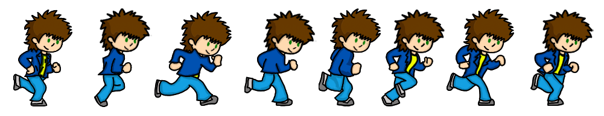

Introdução
O projeto teve como proposta desenvolver a identidade visual e marca de um jogo do gênero pocket game, assim como seus personagens e seu roteiro, cujo objetivo é demonstrar a proposta através de uma mini animação (demo do jogo). Para o desenvolvimento do projeto foram feitas pesquisas sobre jogos do mesmo gênero, abrangendo, e também foram utilizados livros e filmes como referência, além do conhecimento de cada integrante do grupo sobre o tema.
Design e linguagem
Para começar a falar sobre o tema, é interessante verificar a definição de palavra design. Como é muito difícil criar uma definição própria, buscaram-se algumas já existentes, por exemplo, para Alexandre Wollner uma definição de design… É muito difícil, porque a evolução da linguagem, dos elementos técnicos é tão rápida que se fala de uma coisa hoje e ela é diferente amanhã.
A Proposta
É o desenvolvimento de um game, onde o objetivo é atingir não só os jovens, mas um público de várias idades. Trata-se de um jogo onde um garoto de aproximadamente 14 anos está em seu quarto lendo algumas HQs, quando entre uma história e outra ele sente fome e resolve procurar sua mãe para saber se tem algo pra comer. Quando ele passa na cozinha e percebe que ela não está fazendo a janta, e que a cozinha está uma bagunça. Ele olha para a pia e vê uma gosma verde, e então acha que é uma pista, e sai de casa a procura de sua mãe, e nessa busca se inicia o jogo.
Objetivos e Justificativas
Objetivo geral:
O trabalho tem por finalidade apresentar um projeto de criação e desenvolvimento da identidade visual, e da marca de um game, tendo como referência jogos já existentes.
Pesquisa Teórica
Utilizamos na pesquisa o jogo Go to Hell como referência para desenvolver o conteúdo. Jogando esse game pudemos observar que nele são utilizados todos os movimentos, as instruções, os obstáculos e as dificuldades que o jogador tem que passar para mudar de fase, são todos bem simples e práticos, parecidos com o que estamos desenvolvendo no nosso game.
Pesquisa Técnica
Para criação e desenvolvimento do jogo
Para elaborar o projeto de criação visual do jogo, desde a parte gráfica até a parte de edição de vídeo e som, foram utilizados os programas, Adobe Illustrator, Adobe Photoshop, Adobe Flash e Adobe After Effects e Premiere. Uma mesa digitalizadora para facilitar o processo de desenhar no computador.